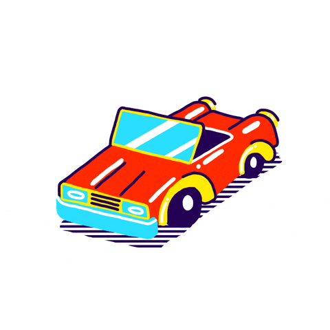

<ion-card>
    <ion-item>
        <ion-avatar slot="end">
            
        </ion-avatar>
        <ion-label class="ion-text-wrap">
            <ion-text color="dark">{{Placa}}</ion-text>
        </ion-label>
        <ion-icon size="small" color="danger" name="trash-outline" (click)="remover()"></ion-icon>
    </ion-item>

    <ion-card-content>
        <ion-item>
            <ion-text>
                <h5>Odômetro atual:</h5>
            </ion-text>
            <ion-note slot="end" color="primary">
                <h6>
                    <ion-icon color="success" (click)="incrementOdometro()" name="arrow-up-outline"></ion-icon>{{Odometro}}
                    <ion-icon color="danger" (click)="decrementOdometro()" name="arrow-down-outline"></ion-icon>
                </h6>
            </ion-note>
        </ion-item>
        <ion-item>
            <ion-text>
                <h5>Última troca de óleo:</h5>
            </ion-text>
            <ion-note slot="end" color="primary">
                <h6>
                    <ion-icon color="success" (click)="incrementOdometroOleo()" name="arrow-up-outline"></ion-icon>{{OdometroOleo}}
                    <ion-icon color="danger" (click)="decrementOdometroOleo()" name="arrow-down-outline"></ion-icon>
                </h6>
            </ion-note>
        </ion-item>
        <ion-item>
            <ion-text>
                <h5>Último check-up:</h5>
            </ion-text>
            <ion-note slot="end" color="primary">
                <h6>
                    <ion-icon color="success" (click)="incrementOdometroCheckup()" name="arrow-up-outline"></ion-icon>{{OdometroCheckup}}
                    <ion-icon color="danger" (click)="decrementOdometroCheckup()" name="arrow-down-outline"></ion-icon>
                </h6>
            </ion-note>
        </ion-item>
    </ion-card-content>
</ion-card>